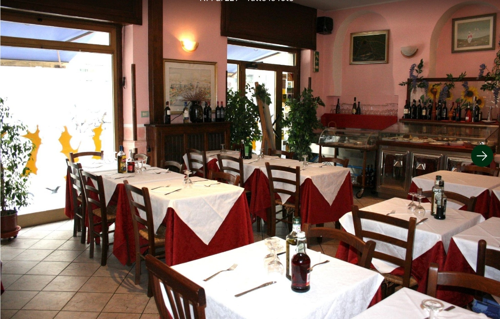

Una tipica trattoria a conduzione familiare dove l'autentica cucina toscana incontra il calore di casa. Gestito con passione da madre in cucina e figlio in sala.
Situata nella tranquilla zona residenziale di Sempione a Milano, ma a due passi dai vivaci locali notturni, la Trattoria Al Toscanaccio è un rifugio accogliente per gli amanti dei sapori sinceri.
La conduzione del locale è interamente affidata alle mani sapienti di madre e figlio. Mamma custodisce i segreti delle antiche ricette toscane ai fornelli, mentre il figlio gestisce la sala con un'ospitalità conviviale e genuina, che fa sentire ogni ospite come a casa di amici.
Con un arredamento semplice e rustico, il ristorante dispone di circa 50 coperti interni ed un delizioso dehors esterno da 10 coperti che si affaccia sulla tranquilla Via Privata Chieti, perfetto per le sere primaverili ed estive.
Ambiente semplice e familiare per cene rilassanti.
10 posti esterni per godersi la brezza milanese.
Il gusto dell'autenticità a prezzi accessibili a tutti.
Clienti storici ed amici che ritornano regolarmente.
Per chi ama pranzare o cenare all'aria aperta, la Trattoria Al Toscanaccio offre una deliziosa pedana esterna con circa 10 coperti dedicati.
Posizionato sulla strada residenziale e tranquilla di Via Privata Chieti, il nostro dehors è riparato e circondato da piante, offrendo un'oasi intima nel mezzo del quartiere Sempione. Risulta ideale per assaporare una costata alla fiorentina accompagnata da un buon vino Chianti nelle serate estive.
Riserva un Tavolo All'ApertoDavide è il cuore pulsante della Trattoria Al Toscanaccio. Con la sua energia contagiosa e il sorriso sempre pronto, accoglie ogni ospite come se fosse un amico che torna a casa dopo un lungo viaggio.
Il suo stile è inconfondibile: una convivialità genuina che trasforma una semplice cena in un'esperienza. Conosce i suoi clienti per nome, ricorda i loro piatti preferiti e non manca mai di consigliare il vino perfetto per accompagnare ogni portata.
Figlio della tradizione toscana, Davide ha ereditato dalla mamma — che regna sovrana in cucina — l'amore per i sapori autentici. In sala, la sua ospitalità calorosa è ciò che fa tornare i clienti, trasformandoli da semplici avventori in amici fidati del Toscanaccio.
"Da noi non sei un cliente, sei un ospite. E un ospite si tratta come famiglia." — Davide, Titolare
Davide mette il cuore in ogni dettaglio, dall'accoglienza alla scelta degli ingredienti più freschi per la cucina della mamma.
Molti clienti sono ormai amici di vecchia data. Chi entra per la prima volta, spesso torna con il sorriso la settimana dopo.
Una cena al Toscanaccio non è solo cibo: è un'esperienza di calore umano, risate e sapori che ti restano nel cuore.

Ci trovi in una tranquilla traversa residenziale della zona Sempione. Passa a trovarci o riservati un tavolo in anticipo.
Via Privata Chieti, 1
20154 Milano (Sempione)
Lunedì: 12:00 – 15:00
Martedì – Giovedì: 12:00 – 15:00 | 19:00 – 22:30
Venerdì – Domenica: 12:00 – 15:00 | 19:00 – 23:00
Compila il modulo per richiedere la tua prenotazione. Riceverai una conferma immediata sul tuo schermo.